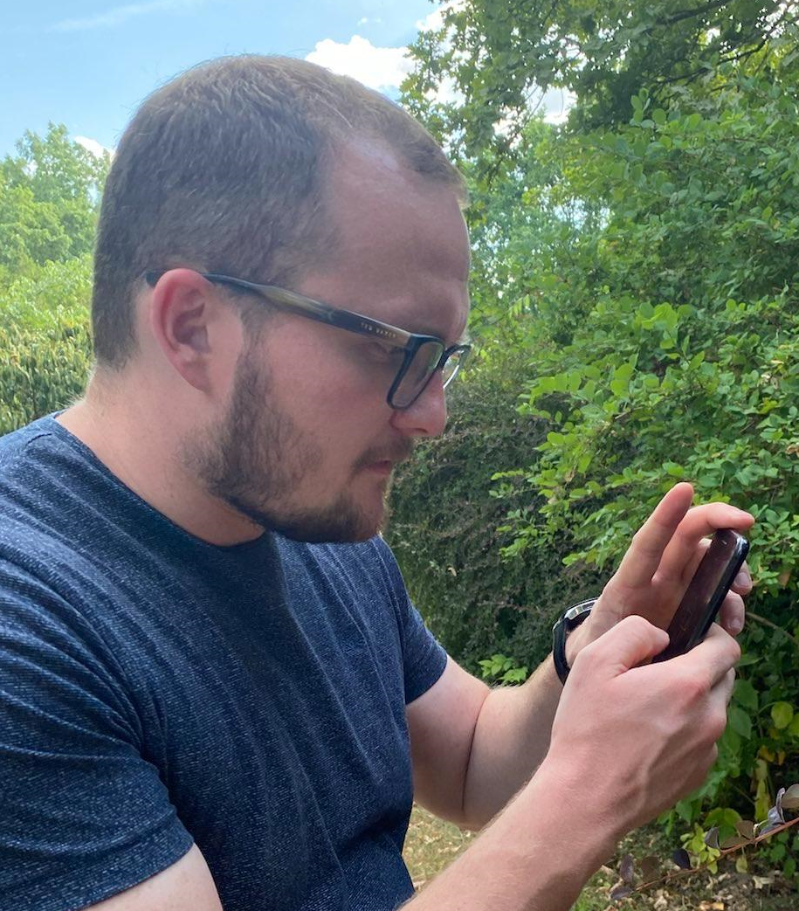

Zoltán Nagy
Consultant
from
Nagykőrös, HU
As a social consultant I learned a lot from people, how colorful is the world. Now, I feel, I want to color my mind and I need to do something else.
My purpose is learn the magic of the FrontEnd. How to make marvellous sites.